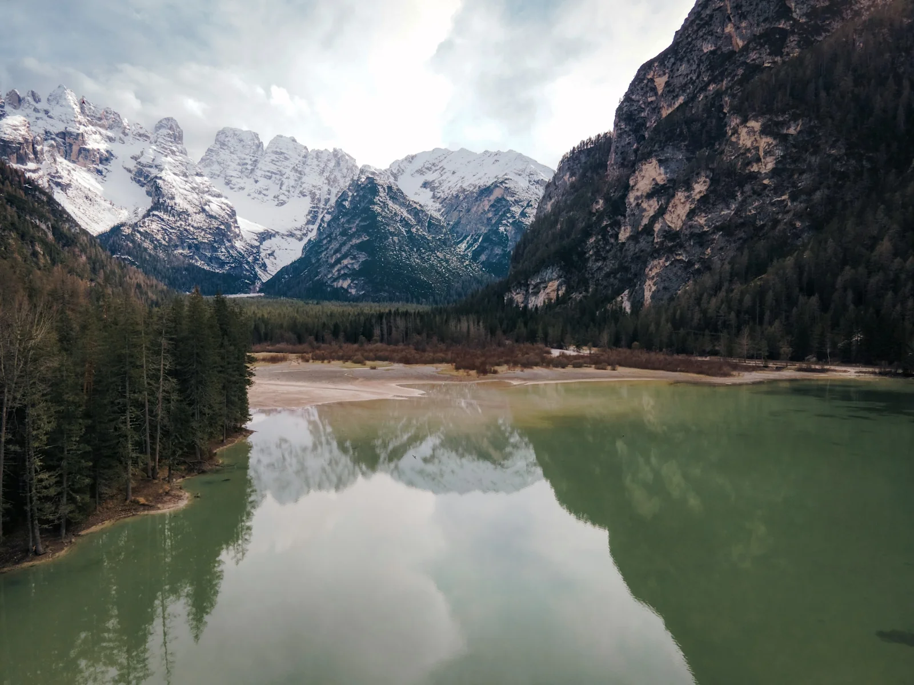

Start with the feeling.
Pick a film look and dial its intensity. Keep the character of the photograph, with a little of your own.
- Film CLUTs with adjustable intensity
- Import .cube files and save named presets

Keep your photos on your Mac and every adjustment reversible. Free and open source, with no subscription.
macOS 26+ · Apple silicon · No account
Phos is macOS-only; Windows experimental build.
Drag across the photo to see what changes.
Photo: Willian Justen de Vasconcellos
Explore freely.
Your originals stay original.
A photography workflow that connects a look, the finer adjustments and the final file.
Pick a film look and dial its intensity. Keep the character of the photograph, with a little of your own.

Tone, five-channel curves and HSL shape the whole image. Nine local mask types let you work on the parts that need attention.

Two layouts. One shared edit state.
Try the browser editor
Export one image or a whole selection. Choose the format, colour space, size and watermark for the way your work will be used.
Move a slider and explore light and color. Try the curve, film looks, and gradient masks to find a feeling you like.
Reading the browser preview…
Interactive browser illustration using approximate SVG filters. It is not the native Phos RAW pipeline or a performance benchmark.
See the feeling, then the settings. Drag each photograph to compare the edit.
A more vivid colour palette with natural separation. For mountain landscapes, travel and warm light.
Exposure +0.20 EV
Highlights −18 · Shadows +12
Photo: Mushegh Hakobyan
View the full recipe ↗Gentle highlights with room for greens and autumn colour. For lakes, woodland and overcast days.
Exposure +0.10 EV
Highlights −12 · Shadows +16
Photo: Willian Justen de Vasconcellos
View the full recipe ↗

A monochrome treatment that brings out texture and structure. For mountains, architecture and graphic compositions.
Exposure +0.10 EV
Highlights −10 · Shadows +8
Photo: Mushegh Hakobyan
View the full recipe ↗JPEG photographs processed by Phos with separately imported film LUTs. Intensity and tone settings are listed with each image.
See the software workflowOptional · Experimental local AI
Describe an adjustment and let a local model suggest editable parameters and local masks. Apply the result when you are happy with the preview.
Turn the request into slider suggestions you can refine.
Describe what should stay unchanged, then review the preview.
Preview local-mask suggestions before applying them.
Experimental: review each result. The approximately 3.1 GB base model installs separately. Standard editing works without it.
Model installationInput and suggestion example
“Set exposure to +0.20 EV. Keep the other settings unchanged.”
From a curve to a final export, go further where you need to.
Free and open source under the MIT license. No subscription, no in-app purchases, no account, and no “Pro” tier.
macOS 26.0 or later on an Apple-silicon (M-series) Mac. Since 3.2.5 the minimum is 26.0, up from 15.0; on older systems, keep using 3.2.4. Only Apple-silicon builds are provided — Intel Macs aren’t supported yet.
Phos uses macOS’s built-in RAW decoding (Core Image and ImageIO), so any RAW file that Preview can open can be edited — including mainstream formats from Canon (CR2 / CR3), Nikon (NEF), Sony (ARW), Fujifilm (RAF), and Adobe DNG.
Support for newer cameras depends on whether the macOS version you’re running already includes a decoder for that model.
No. Photos are processed entirely on your Mac — no cloud, no account, no telemetry.
The only network activity is a single check of the latest version number at launch; the request contains nothing about you, your photos, or this Mac.
Phos is local-first: no subscription, no cloud sync, no mobile app, with a focus on doing RAW decoding, tone and color, film CLUT emulation, local masks, and batch export really well.
It’s built for personal photography workflows where photos stay entirely on your own machine.
This is the standard prompt every app without Apple notarization gets — not something specific to Phos. Double-click Phos → click “Done” → open System Settings → Privacy & Security → scroll to the bottom and click “Open Anyway”.
You can also run xattr -dr com.apple.quarantine /Applications/Phos.app in Terminal to remove the quarantine flag for good.
Yes. Batch import, syncing one photo’s adjustments to others, and batch export (including watermarks).
The macOS app is the primary platform. Windows has a separate experimental port (4.0.1, ported from the macOS 4.0.1 source), maintained separately from macOS: Apple’s Vision and Core Image are replaced with local implementations, there is no on-device AI editing, and it isn’t code-signed. It’s available from the downloads section.
An iPad version is still being assessed for feasibility, with no releasable timeline.
File an Issue or a Pull Request at the GitHub repository. The project is written in Swift, built on Core Image, Vision, and AppKit.
Free and open source. Open a folder and start with a photograph you know.
Download MacmacOS 26+ · Apple silicon · First launch requires manual approval
Windows users: see the experimental build.